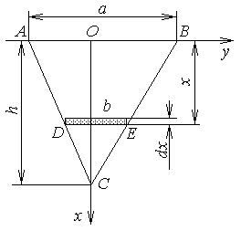

П 25 №34
С какой силой жидкость плотности давит
на вертикальную треугольную пластину с основанием  и
высотой
и
высотой  , погруженную в жидкость вершиной
вниз так, что основание находится на ее поверхности?
, погруженную в жидкость вершиной
вниз так, что основание находится на ее поверхности?
и
высотой , погруженную в жидкость вершиной
вниз так, что основание находится на ее поверхности?РЕШЕНИЕ:
По закону Паскаля сила  ,
с которой жидкость плотности давит на площадку
,
с которой жидкость плотности давит на площадку
 при глубине погружения
при глубине погружения  , равна .
, равна .
,
с которой жидкость плотности давит на площадку
при глубине погружения , равна .Рассмотрим элементарную прямоугольную площадку, находящуюся
на глубине  , имеющую основание
, имеющую основание  и высоту
и высоту  .
.
, имеющую основание и высоту .Из подобия треугольников и
:
.
Сила давления жидкости на всю пластинку равна:

Ответ: .